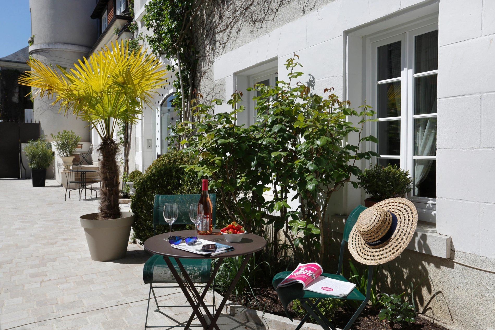
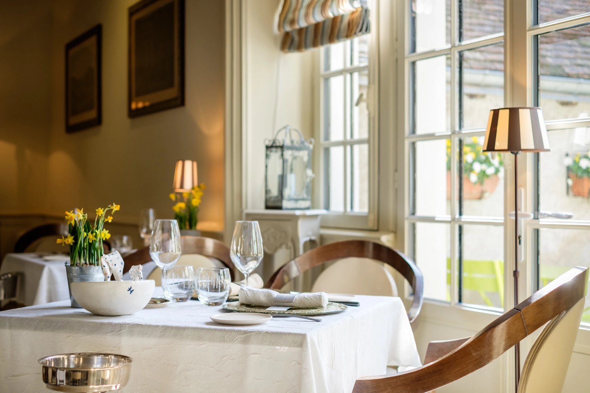

Auberge du Bon Laboureur
A village inn with a pretty courtyard and an established restaurant.


Available for 21–22 September when checked
- Classic: €199 flexible or €179 non-refundable.
- Charme: €219 flexible.
- Dogs: published pet fee €20 per night; confirm whether this is per dog and that both dogs are accepted.
The restaurant’s published schedule includes Monday dinner. It is Michelin-selected, with no star; a dinner table has not been reserved. Michelin lists pets as allowed everywhere; confirm arrangements for both dogs directly.
Chenonceau park and gardens: nearby, with dogs allowed on leads and paid admission. Large dogs cannot enter the château interior; this is a garden visit with Brody.
A free riverside alternative: the “Rives du Cher et Château de Chenonceau” trail starts at Civray-de-Touraine. The full easy circuit is 14 km / 3h30; a shorter out-and-back gives a gentler leg stretch. Dog policy is not explicitly stated: keep them on leads and check local signs.
Walk sources: Chenonceau’s official dog policy · official Cher walking leaflet. Confirm the room’s flexible cancellation deadline before committing.
Sources: official room booking · official restaurant · Michelin listing and pet policy · hotel website and photographs.